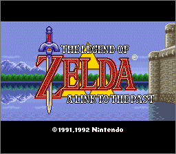
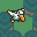

|
|

|
|

|
Zelda 3 Challenge: Quest for Calatia
 Imagine
playing a new Zelda 3. Everything
you know about the game -- the dungeons, the graphics, the story, the great
outdoors – will all be created anew. Of course the underlying game will
remain, but presenting a world you've never visited, a quest you haven't
experienced, perplexing dungeons you've never faced. Every aspect of the game
will be challenging than ever. Such a phenomenon has happened before, in the
consummate rewrite of Zelda 1 as Zelda
Challenge: Outlands. A new link to the past will be forged, with the same
level of redesign and equal aura of reminiscence, in the upcoming new
adventure, Zelda 3
Challenge: Quest for Calatia! Imagine
playing a new Zelda 3. Everything
you know about the game -- the dungeons, the graphics, the story, the great
outdoors – will all be created anew. Of course the underlying game will
remain, but presenting a world you've never visited, a quest you haven't
experienced, perplexing dungeons you've never faced. Every aspect of the game
will be challenging than ever. Such a phenomenon has happened before, in the
consummate rewrite of Zelda 1 as Zelda
Challenge: Outlands. A new link to the past will be forged, with the same
level of redesign and equal aura of reminiscence, in the upcoming new
adventure, Zelda 3
Challenge: Quest for Calatia!
 Welcome
to QuestForCalatia.net! Welcome
to QuestForCalatia.net!
Once upon a time, there was a great website known as Challenge Games. It was
devoted to creating challenging new versions of classic games, releasing such
treasures as Super Mario 3 Challenge and Zelda Challenge. It held the promise
of many other adventures, but sadly, most of the group's members moved on to
other things. The message board grew quiet and the site's hosting was not
renewed; the CG community vanished, its visitors gathering elsewhere.
While this location is not Challenge Games, it represents the spirit that
made it great. This is the home of ZeldaC and my ongoing project, Zelda3C.
This site will never aspire to replacing the original website's content; my
only focus remains on developing the world of Calatia.
Special thanks goes to Ryan for providing hosting for this project.
Zelda3C Diary
Every few weeks (or months, or longer), I post my latest progress in an
online diary. Sometimes its purpose is to get feedback from future players,
while other times it is written for my own benefit, to look back on later.
Here you can see which part of the game I'm currently working on, read about
what problems I'm tackling, and respond to the game's direction. You may pick
up some hints about the game's content, but I'm careful about not releasing
spoilers.
Zelda3C Diary ~ Quest for Calatia is alive once
more! I’m back at last!
2010-12 Archive ~
Moving beyond Truce Dam, and the project’s hiatus.
2008-09 Archive ~ The heart of Calatia and the
laptop's destruction.
2007 Archive ~ Saria
River, Harmony Forest,
new sprites.
2006 Archive (Part 2) ~ Monsters, castle
graphics, initial forest.
2006 Archive (Part 1) ~ More trees,
hookshot-compatible houses.
2005 Archive ~ Conflicts, new trees, upcoming
houses.
2004 Archive (Part 2) ~ Calatia Castle,
town improvement.
2004 Archive (Part 1) ~ 8x8 tile mastery, Epoch
Tower, State of the Challenge Address
2003 Archive ~ Programming, Bug Zapping, Moving
to CA.
2002 Archive ~ Ancient News ~ Overworld
preparations, graphics contest.
Screenshots
Here are the screenshot albums:
Batch 5 - Calatia Castle and Lellow Farm
Batch 4 - Welcome to Calatia
Batch 3 - A dark maze of bushes
Batch 2 - Getting good at Hyrule Magic
Batch 1 - Created by my discontinued editor
Requests for Help
Although I'm the sole designer of this new adventure, there are certain areas
of this game which are completed faster, and often better, when
certain talented people lend a hand. To expedite and improve this rewrite, I
have posted two categories which you, or someone you know, may be able to
help out with.
There used to be pages for graphics and music, but
I have since assembled a crack team of experts to carry out these
developments. :) [New music developments are postponed,
since I don’t have time to manage them, but I know who to call when
I’m ready.]
ROM Editing - For hackers familiar with data
stored in the Zelda 3 ROM.
ASM Hacking - For programmers familiar with
ASM and the Zelda 3 ROM.
Story of Calatia
Three years after leaving home, Link's quests have taken him to all parts of Hyrule, from the depths of the
Lost Woods to the peaks of Death Mountain, and from North
Castle's territory to the cursed
valley of the Great
Palace. He has
journeyed to distant kingdoms, even to the eastern realm of the Outlands, all
to keep peace in the world and protect the omnipotent Triforce.
In all this time, he has not returned to his homeland, Calatia, where he was
born and raised. Convinced that this kingdom held nothing of the splendor of
Hyrule and other foreign lands, he had hurried away as a youth, unaware of
the wonders he would someday uncover. He would never have guessed that the
town's dysfunctional clock tower holds overwhelming powers of time travel.
Nor could he suspect there were cryptic labyrinths entombed beneath this
peaceful kingdom, with an ancient evil destined to grant them life.
The beautiful land
of Calatia has a long
history of peace and prosperity, lasting even through Hyrule's darkest ages.
A day soon approaches, however, when Calatia will experience a series of
disasters that will rip the kingdom apart. Time itself will bend to the will
of a mysterious, avenging sorceress. Link will learn the truth about the
lands he overlooked, but during a time when only the forgotten past can change
the desolate future.
(The name 'Calatia' is taken from old Zelda comic books, published by Valiant
& endorsed by Nintendo. This new version of Zelda 3 is, of course, NOT
endorsed by Nintendo in any way.)
Zelda3C's opening story is available for additional
reading. It begins with an account of the Legend of Zelda, but for good
reason. Although it contains spoilers about the game's beginning, not
everything is revealed. It has been updated as of November 2013 to match
Nintendo’s Zelda series timeline. Events leading up to Link's quest for
Calatia are described in detail.
Overworld & Underworld
Calatia rests high in the mountains, split into various sections by cliffs
and jagged terrain. The largest town, Meridia, is bordered by Harmony Forest
to the north, Death Mountain to the south, Calatia Castle
on its western side and Kingdom Caverns to the east. A large river passes
through this beautiful settlement, forming a great waterfall that is said to
spill over the edge of the world. Little else is known of Calatia, for the
wild country beyond civilization is guarded by natural pitfalls and malicious
forces.
Beneath the kingdom's awe-inspiring landscape lie the unexplored chambers of
Calatia's dungeons. Enigmatic and cryptic, these secret labyrinths are
inactive systems of death traps and fortresses. It is said that Ganon himself
designed and created each stronghold, then mysteriously sealed them away
without granting them any purpose. Popular lore places one in the forest,
though it hasn’t been proven. Another is believed to be within the
mines, but this entrance may only be a gateway to Death Mountain.
Plans & Progress
 The
overworld is currently being designed from scratch at the tile level, using
both new and existing combinations. Specific blocks will be altered to build
major structures and unique locations. For example, Sanctuary and the Witch's
Hut were spent in the creation of Epoch
Tower. Not counting
repeated screens, there are 70 Light World areas and 64 Dark World areas.
With my own search engine based on each of thousands of blocks I've carefully
documented, this task isn't nearly as difficult, although it's still very
time consuming. The
overworld is currently being designed from scratch at the tile level, using
both new and existing combinations. Specific blocks will be altered to build
major structures and unique locations. For example, Sanctuary and the Witch's
Hut were spent in the creation of Epoch
Tower. Not counting
repeated screens, there are 70 Light World areas and 64 Dark World areas.
With my own search engine based on each of thousands of blocks I've carefully
documented, this task isn't nearly as difficult, although it's still very
time consuming.
Every
dungeon will be a new creation, with original mazes and puzzles, new colors
and graphics, and assortments of terror you've never faced before. There is plenty of room for
exploration, as there are 296 rooms to set up. (12 dungeons, plus houses and
caverns.) With full control over the indoor objects and room structures, I
can be far more creative than with ZeldaC.
The text
will be completely rewritten. Every word of it. Intro storyboard, signs,
people, and events. 297 messages, formatted carefully to present essential
clues, story and information. As it stands now, 75% of Zelda3C's text is
already written. My writing style is different from Zelda 3 -- every other
person won't be calling you 'brother' -- but it fits the new quest well.
While the
frame of the original story (pendant & crystals in light and dark worlds)
cannot bend much, I've been creative to ensure that the new story is original
and unique. Using time tiles and a legendary ocarina, Link must traverse the
past and undo a terrible future. The story's volume is similar to the
original game, limited only by text space and the number of events. The story
itself is justly inspired by Zelda comics from NES days, which weren't very
old when Zelda 3 was released. Characters, events, and settings remain true
to both the comics and to the Zelda lore of that era, yet joined by
references to newer titles.
Most of the
music will be new or significantly altered. (27 songs total) I’ve been in touch with four
different musicians who would like to compose for the game, two of whom are
familiar with Hyrule Magic’s music editor. In the past, I’ve stated I would
like to include some tracks from non-Zelda games, but I have since thought
better of it; all will either be remixes of existing Zelda songs, or entirely
new pieces.
A few of the songs are already written, by a
musician whose name I cannot yet disclose. Which songs, so far? Overworld,
Village, Cavern, Sanctuary, Castle, Palace. They each sound amazingly
beautiful – I’m always tempted to spoil them by posting them as
mp3s. Sorry, no Ocarina of Time
“Lost Woods” theme... aren't you guys tired of that one yet?
The
graphics are getting an overhaul, not just for a new look, but to represent
new buildings and locations. Items, monsters, people, places, things --
almost everything is changing in appearance. Some graphics will be original
art, while more common things may be taken from other games. No man is an island, especially in a
project this big, so I have enlisted the help of Josh N. and DarkPrince909 to
create much of these graphics.
The
palettes won't be changed very much, except where major graphics editing
requires it. Calatia Castle, for example, has grey stone colors instead
of Hyrule Castle's white, green and blue. Link
is definitely wearing a better shade of green, with NO pink hair! The future
world won't have ugly green water and yellowed earth, as that would be too
similar to the Dark World.
The title
screen will display a panoramic view of much of the kingdom, possibly with Epoch Tower (aka The Tower of Time) standing
tall on one side. There will be no Master Sword sliding into the
‘Z’… something else appears instead. ;) New storyboards will chronicle
Calatia's past and preface the new opening story.
New 3D
shapes! The golden Triforce has taken a pyramid shape, while the seven
crystals become shards of the Triforce of Wisdom.
Two
overworld maps (viewed by pushing X) will reveal Calatia as it appeared in
the past and how it looks in the bleak future. Each of the 14 new dungeons
will have new maps as well.
The
game's ending will be different, simply because the sprites and locations
themselves are different. The basic format, however, will likely be the same.
The ending credits will list everyone who contributed ideas used in the game,
as well as programmers and artists whom I depend on to make this game a
reality.
Many more
changes are in place, some of which required ASM hacking. These surprises
won't be listed here, even after release. It will be up to you to discover
them as you play the game... If you would like to help with ASM hacking, see
the ASM Request page.
Extras
(outside the ROM patch) will likely be the same as with ZeldaC -- HTML
instruction manual, colorful world map, punching puppet Ganon, bonus soundtrack
CD... (hey, nevermind the last two!)
Quest
design tactics will often be similar to ZeldaC. (Let's go back to Level 1 for
that important item...) (Where in blazes is Level 6?) Each item will become
more important, especially the boots, hookshot, the staff of Byrna, and the
hammer. There will be many more monsters, placed in dire locations. You will
get very lost, put forth real effort to uncover dungeon entrances, and get
slammed by most every boss you meet. The clues you read will be essential. I
still enjoy implementing one-way doors, HIDDEN cave entrances,
"lost" or "unreachable" items, false walls, mandatory
shortcuts, and surprise enemies. Beware.
The Wait
It's been as difficult for me as it has for most of you. Every day I'm
anxious to work on Zelda3C, yet every day I have to battle real life to get
some free time. Progress continues, yet it's still impossible to estimate how
long it will take to be finalized. One positive thing about this wait is that
it's finite. I'm just as psyched about this game as I was years ago,
moreso because of the progress I've made and the awesome concepts I've
already set in motion. I have several years invested into this project, and I
know I'll never lose interest.
There's a LOT involved in completely rewriting this
game. I'm not just orchestrating a new adventure, but re-commanding elements
of the game that have never mixed this way before. There's so much to *know*,
about both Hyrule Magic and the way the game operates. Much of my time has
been spent simply studying things in the game as they interact, writing
programs to work concurrently with Hyrule Magic, and struggling over the fine
details of the overworld.
I walk around with my head in the clouds most days,
when not actually working on the game, thinking of what I'll do next or how certain
situations might play out. You wouldn't believe how many post-it notes,
napkins and receipts I've had to write on while away from home, only to
transcribe them later! I long to work on the game all week long, yet real
life prevents solid progress outside of weekends.
I'm much more likely to release screen shots and
progress reports than any kind of beta. This is because I don't like people
playing half-created masterpieces -- it's so much better to present
everything 'fresh' at the same time. You don't really want to get deep into
the adventure, only to stop after a few dungeons, do you? Of everything you
see, you might ask yourself, "Is that final?" or "Is this
going to be better?"
I know it's a long time to wait, but I insist on
keeping the "start-to-finish" experience intact. This is exactly
how I handled Zelda Challenge: Outlands. I made sure the wait was worth it,
and people were thrilled to be presented with one complete game.
This page continues to change and improve along
with this project.
Regular updates can be found in the Zelda3C Diary.
Questions? Ideas? Suggestions?
Write to me!
 Follow
the project on Twitter!
Return to the Site Menu.
This site is not affiliated with nor endorsed by Nintendo in any way.
|
{kind=link}